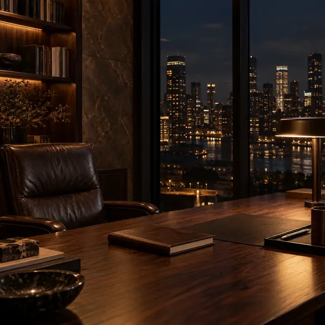

AUTHOR DESIGN STUDY
写真を控えめに、著者の存在を伝える。
記事下とサイドバーの著者紹介を、同じ写真・文章で3案比較できます。
採用前の比較用ページです。写真・紹介文は仮配置です。
ARTICLE MAIN IMAGE
経営者の資産はなぜ自社株に集中するのか

記事のタイトル直下にメイン画像を追加しました。
各案の下にある「記事全体で確認する」から、本文・サイドバー・記事下を通して確認できます。
AUTHOR DESIGN STUDY
記事下とサイドバーの著者紹介を、同じ写真・文章で3案比較できます。
採用前の比較用ページです。写真・紹介文は仮配置です。
ARTICLE MAIN IMAGE

記事のタイトル直下にメイン画像を追加しました。
各案の下にある「記事全体で確認する」から、本文・サイドバー・記事下を通して確認できます。